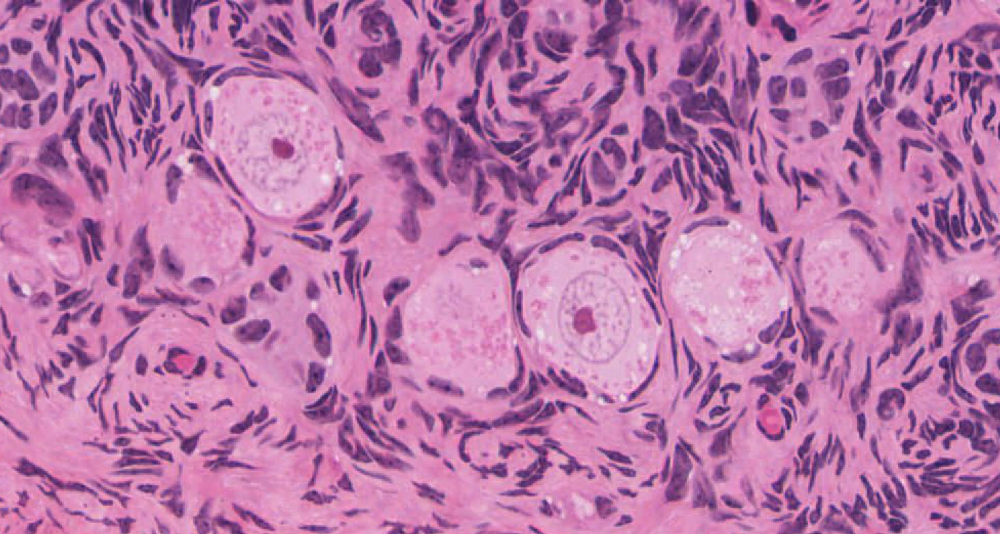
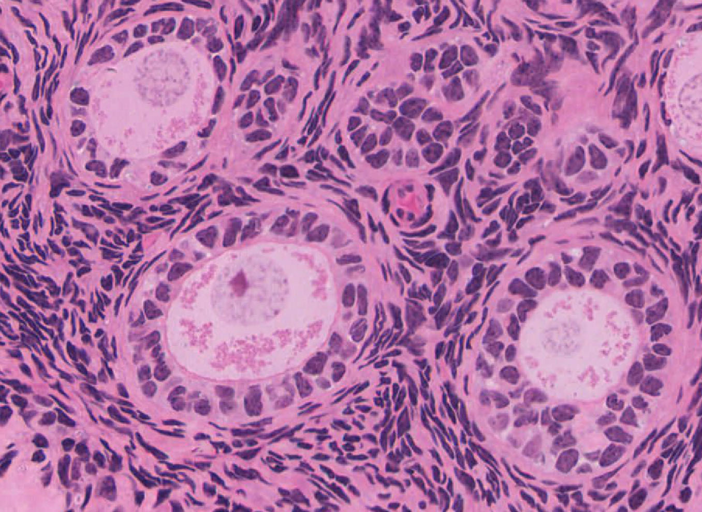
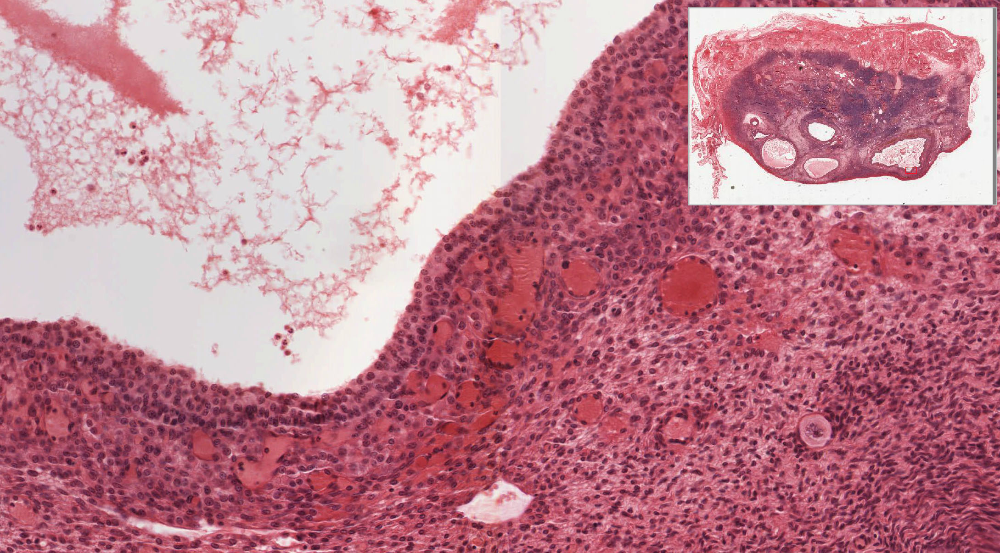
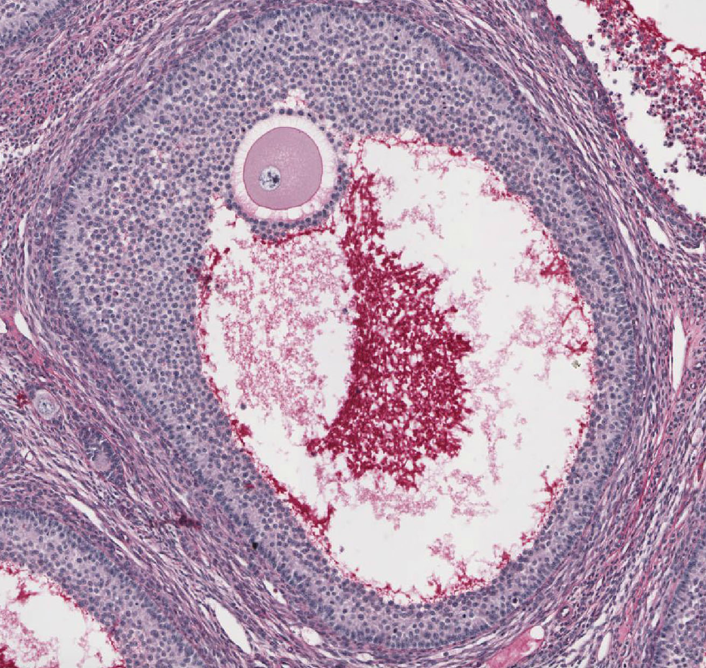

Ovarian cell rims, antra and vascular theca
Compare real cell-layer and space relationships. These author-linked images are separate fixed fields, not a tracked follicle’s development or a human timed sequence. Only the vascular-theca field is explicitly assigned to human slide 235; specimen identities for the other exports are qualified below.
Primordial-pattern field

Large pale oocyte profiles are bordered by thin, flattened-to-low surrounding cells. Manual context refers to monkey slides 239/269; this exported JPEG’s exact slide and H&E/PAS choice are unassigned.
University of Michigan Histology Laboratory Manual, p. 255 author-linked field 2; © Regents of the University of Michigan. CC BY-NC-SA 4.0. Whole source unchanged; no calibrated bar supplied.
Primary-pattern field

Cuboidal surrounding cells make the oocyte rim more conspicuous; the source presents this as a primary-follicle example. Exact slide, species and stain of this exported field are unassigned. Do not call it human.
University of Michigan Histology Laboratory Manual, p. 255 author-linked field 3; © Regents of the University of Michigan. CC BY-NC-SA 4.0. Whole source unchanged; no calibrated bar supplied.
Human vascular theca context

The original human slide 235 H&E field relates the granulosa-side rim, surrounding thecal tissue and blood-filled vessel profiles. The original overview/red locator belongs to this source image only. Donor health, age, section thickness and physical calibration are unreported.
University of Michigan Histology Laboratory Manual, p. 255 author-linked field 7; © Regents of the University of Michigan. CC BY-NC-SA 4.0. Whole source unchanged; no calibrated bar supplied.
Multilayer wall and forming antral spaces

The source’s “secondary” example shows multiple surrounding cell layers and coalescing lacunae/antral space. Terminology is source-specific; this does not establish a universal stage label or timed transition. Exact exported specimen is unassigned.
University of Michigan Histology Laboratory Manual, p. 255 author-linked field 5; © Regents of the University of Michigan. CC BY-NC-SA 4.0. Whole source unchanged; no calibrated bar supplied.
Large antral pattern

An oocyte and surrounding cell complex project into a large antral chamber, with a multilayer wall around it. The manual itself says this example is too small to demonstrate a real Graafian follicle. It is not evidence of preovulatory competence; exact specimen is unassigned.
University of Michigan Histology Laboratory Manual, p. 255 author-linked field 6; © Regents of the University of Michigan. CC BY-NC-SA 4.0. Whole source unchanged; no calibrated bar supplied.
No image measures ploidy, hormone secretion, physiological fluid volume, fertility or developmental duration. Stained/processed tissue colours are not living colours. A cavity in one section does not establish an intact three-dimensional shape or all source stages. These fields do not supply a complete primordial-to-ovulatory classification.